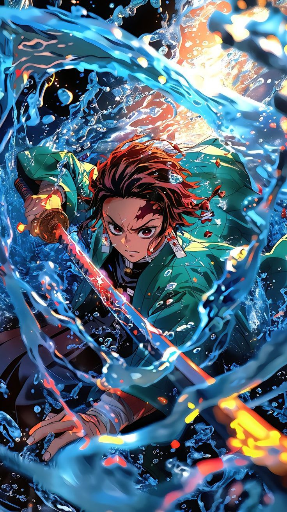

💧Demon Slayer, Water Breathing
Tanjiro Kamado
A kind-hearted swordsman who fights to cure his sister and end the reign of demons. His Water Breathing flows with unyielding resolve.
- Strength
- Speed
- Technique
- Combat Mastery